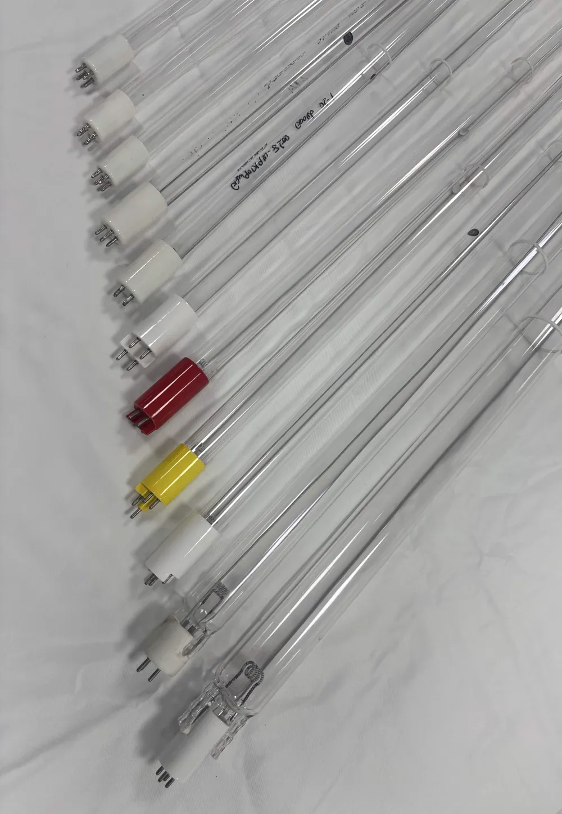
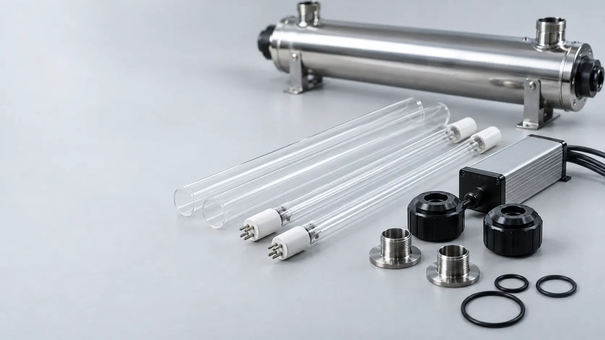
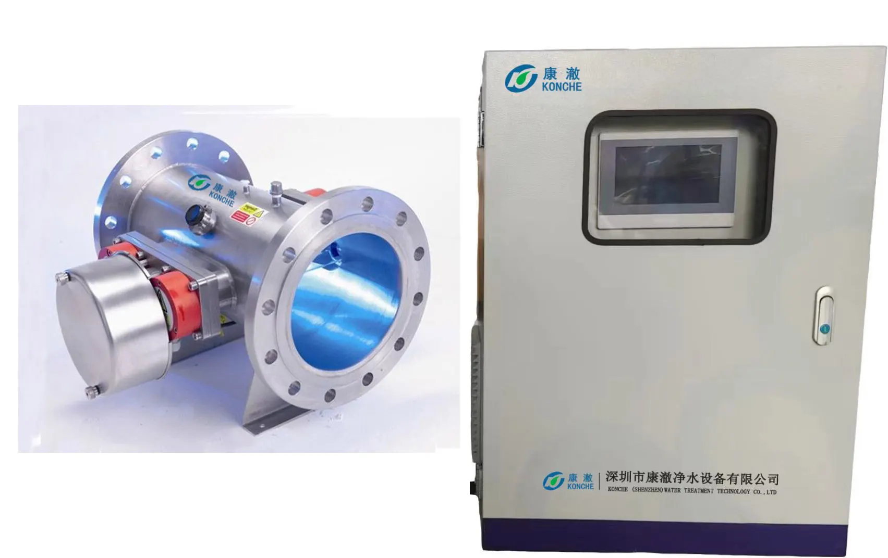
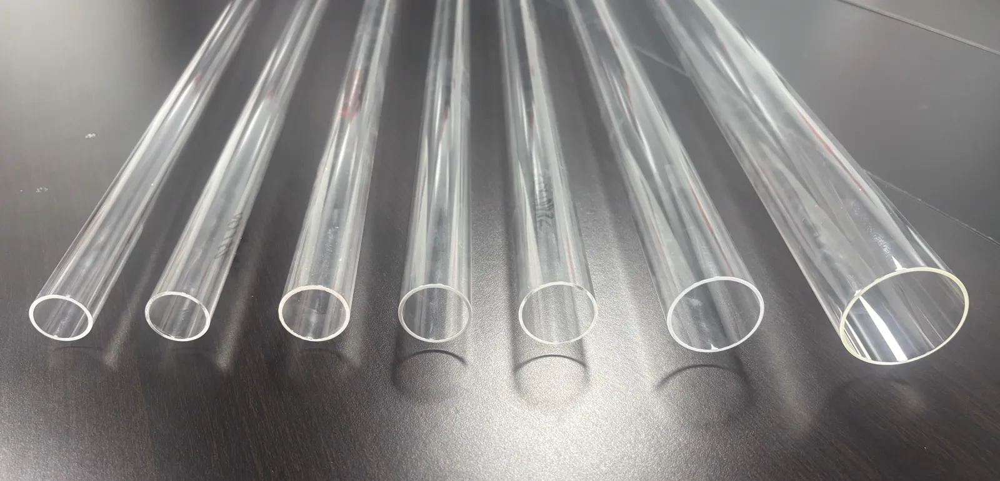

How Often Should You Replace a UV Lamp in a Water Treatment System?
Replacement intervals, the real meaning of the 70% output reference, dose factors and quartz-sleeve care — for industrial UV water treatment
Ask an Engineering Question ↗
How often should a UV lamp be replaced?
Every 8,000–10,000 operating hours for KONCHE low- and medium-pressure lamps — about 11–14 months of continuous 24/7 duty — or earlier when the lamp can no longer maintain the model-specific UV intensity setpoint or required dose. A lit lamp is not the test: germicidal output decays while the tube still glows, and sleeve fouling, low UVT or excess flow reduce the dose further. KONCHE has manufactured UV disinfection equipment in China for more than 20 years and supplies replacement lamps, quartz sleeves and consumables long-term.
On this page
- Why a lit UV lamp may no longer deliver the required dose
- UV lamp replacement intervals — and the real meaning of the 70% rule
- Four checks beyond the calendar
- When UV is the final barrier — and when it is usually unnecessary
- The dose that matters — why there is no single number
- Water and operating conditions that reduce UV performance
- Quartz sleeve maintenance
- What to confirm before buying replacement lamps
Why a lit UV lamp may no longer deliver the required dose
Low-pressure UV disinfection commonly uses output near 254 nm to damage microbial DNA and RNA, preventing target organisms from reproducing. The more precise engineering term is microbial inactivation, not absolute sterilization.
Three problems can reduce performance while a lamp still appears to be on:
- Lamp-output decay. Germicidal output declines with operating time. The useful-life rating tells you when a specific lamp is expected to reach its declared end-of-life performance; it is not the time when the tube necessarily goes dark.
- Unverified replacement lamps. A low-priced tube may fit the socket but lack traceable germicidal-output data, material compatibility or evidence that it delivers the required dose in the original chamber. Ask for UV-C output, wavelength, dimensions, ballast compatibility and performance at end of lamp life — not only lamp wattage or a photograph of a glowing tube.
- Sleeve fouling and unsuitable water. Scale, iron deposits and biofilm reduce transmission through the quartz sleeve. Low UVT, turbidity and particles reduce the energy reaching microorganisms. A new lamp cannot compensate indefinitely for the wrong water conditions or excessive flow.

The US EPA's Ultraviolet Disinfection Guidance Manual treats flow, lamp status, UV intensity and, for calculated-dose systems, UVT as core operating variables. This is why "the lamp is lit" is not a dose measurement.
UV lamp replacement intervals
KONCHE's current product pages specify the following service-life range:
| Lamp type | KONCHE published lamp life | Calendar equivalent at 24/7 duty | Replace when |
|---|---|---|---|
| Low-pressure UV lamp | 8,000–10,000 hours | About 11–14 months | Rated hours reached, model-specific intensity alarm/setpoint is not maintained, or physical/electrical failure occurs |
| Medium-pressure UV lamp | 8,000–10,000 hours | About 11–14 months | Rated hours reached, model-specific intensity alarm/setpoint is not maintained, or physical/electrical failure occurs |

Use two rules in practice:
- Track operating hours and switching cycles. A run-hour counter is more reliable than a date written on the chamber. Intermittent operation accumulates fewer hours, but frequent starts and stops can shorten lamp and ballast life; follow the limits for the installed model.
- Plan a formal review at least annually for continuous-duty systems. Review hours, intensity trend, alarms, sleeve condition and microbiological results together. Do not automatically extend service just because the lamp still glows.
What does the "70% output" rule really mean?
The 70% figure is useful, but it is often stated too broadly. EPA guidance gives reduced lamp output such as 70% of initial output as an example condition that may be used when validating a reactor for lamp aging and sleeve fouling. That means approximately a 30% decline, not "70% output decay." It is not a universal alarm or mandatory replacement threshold for every UV system.
Use the setpoint, aging factor and rated life documented for the actual reactor and lamp. If a validated system requires a particular intensity setpoint, the measured intensity must remain at or above that setpoint while flow, lamp status and other operating conditions remain inside the validated range. The EPA's UV Treatment Toolkit further explains the roles of UVT, lamp aging, fouling and dose monitoring.
Four checks beyond the calendar
| Check | Method | What it tells you |
|---|---|---|
| Operating time | Run-hour counter or controller log | Whether the lamp has reached its published service life |
| UV intensity and operating conditions | Sensor/setpoint or validated dose display, reviewed together with flow, UVT where applicable and lamp status | Whether the reactor remains inside its documented operating envelope |
| Physical and electrical inspection | Check for end blackening, unstable ignition, flicker, ballast fault, damaged connectors and sleeve condition | Whether lamp, ballast or mechanical components show deterioration |
| Product-water microbiology | Periodic HPC, coliform or application-specific testing at defined sampling points | Whether microbiological control is being maintained at the sampled place and time across treatment, storage and distribution |

No single check covers the entire system. A clean microbiological sample does not prove lamp dose by itself, and a normal-looking lamp does not prove adequate UV output. Mature plants combine operating data, sensor readings, maintenance inspection and laboratory verification.
When should UV be the final barrier — and when is it usually unnecessary?
UV is commonly evaluated as a final or near-final barrier when treated water must meet a microbiological objective without adding a chemical residual. Typical duties include:
- drinking water, bottled water and water-refilling-station outlets;
- ingredient water in food and beverage production;
- ice making and water supplied to restaurant or hotel kitchens;
- final rinse water for food-contact equipment and containers;
- treated well water or surface water after suitable pretreatment;
- RO product water after storage, or on a hygienic recirculation loop;
- pharmaceutical, electronics and high-purity systems with defined microbial limits;
- processes in which chlorine is undesirable and an immediate inactivation barrier is required.
Sector references across food, beverage and other applications are collected on KONCHE's industry solutions page. The CDC's overview of water-treatment systems notes that UV systems work better with prefiltration and do not remove chemical contaminants. For food-contact water, the US FDA's 2023 Grade "A" Pasteurized Milk Ordinance treats UVT, lamp output and chamber hydraulics/flow as critical factors and requires a validated reduction-equivalent dose for the application.
UV is usually not the core treatment step when water is used only as boiler makeup and then enters a high-temperature boiler. In that duty, hardness, TDS, silica, alkalinity, dissolved oxygen, pH, corrosion and scale control normally drive the process selection. UV may still be justified if the same treated-water system also supplies drinking water, food-contact water, ice, filling or another microbiologically sensitive use.
Placement also matters:
If an open or poorly controlled tank sits after the UV chamber, water can be contaminated again. In that case, place the final UV barrier after the tank or use a properly designed recirculation loop. UV has no disinfectant residual, so it cannot protect a long or unhygienic downstream network by itself; storage design, circulation, sanitation and — where required — a residual disinfectant remain part of the system.
The dose that matters: there is no single number for every application
UV dose or fluence is commonly expressed in mJ/cm². It depends on intensity and exposure, while reactor performance also depends on hydraulic behavior. The correct target comes from the organism or microbiological objective, required log reduction, applicable standard and validated reactor performance.
| Reference or application | Dose approach | Important limitation |
|---|---|---|
| General drinking-water design | Select required dose for the target pathogen/log reduction and operate within validated flow, UVT and lamp-output conditions | There is no universal dose that covers every pathogen and application |
| FDA water in contact with pasteurized dairy products | Validated RED of at least 40 mJ/cm² at 254 nm | This is a specific US dairy/food-contact requirement, not a global rule for every industrial system |
| KONCHE project selection | State the design dose at the specified flow and water quality, including lamp-aging assumptions | Final commitment belongs in the project proposal and applicable test documentation |
The WHO Guidelines for Drinking-water Quality emphasize that delivered fluence varies with intensity, exposure time and wavelength, and that turbidity and dissolved species can inhibit UV treatment. Procurement specifications should therefore ask for the delivered or validated dose at design flow, design UVT and end-of-lamp-life conditions, not a new-lamp number in isolation.
Water and operating conditions that reduce UV performance
| Factor | Effect | Design or maintenance response |
|---|---|---|
| UV transmittance (UVT) | Lower UVT reduces intensity through the reactor and therefore reduces delivered dose | Measure UVT at the proposed UV installation point and size/validate the reactor for the expected range |
| Turbidity and particles | Particles absorb or scatter UV and may shield microorganisms | Provide suitable filtration; WHO identifies below 1 NTU as supportive of effective disinfection, while project requirements may be stricter |
| Hardness, iron and other fouling constituents | Deposits on sleeves and sensors reduce transmission or distort readings | Use appropriate pretreatment and set inspection/cleaning frequency from water quality and intensity trend — not from a universal iron limit |
| Water temperature | Lamp output and cooling requirements vary with lamp technology and reactor design | Check the operating-temperature range stated for the selected model |
| Flow above the rated or validated range | Reduces exposure time and can take the reactor outside its documented performance envelope | Install flow control, divert/interlock logic or select a larger reactor |
| Aging, failed lamps or non-original substitutes | Reduces output or invalidates the documented reactor configuration | Replace with compatible, traceable components and recheck alarms/setpoints after service |
EPA guidance identifies UVT, particle content, upstream treatment, fouling constituents and algae as factors that can affect reactor performance. The important distinction is that water-quality data and operating data are both needed: UVT, turbidity, hardness and iron come from analysis, while peak flow, temperature and duty cycle come from the process design.
Quartz sleeve maintenance: inspect the transmission path, not only the lamp
The lamp sits inside a quartz sleeve, and the sleeve is part of the optical path. Scale, biofilm and iron deposits can reduce UV transmission even when the lamp is new.
- Use 3–6 months as the initial inspection/cleaning schedule for KONCHE low-pressure systems, consistent with the current low-pressure UV product maintenance table. Shorten or extend the interval using water quality, intensity trend, runtime and any automatic wiping system.
- Clean according to the equipment manual. A mild-acid method may be appropriate for mineral scale, but cleaning chemistry, concentration, contact time, seals and safety precautions must match the equipment materials and site procedure.
- Replace by condition, not by calendar alone. Cracks, scratches, permanent staining, etching or persistent haze after correct cleaning are replacement triggers. For comparison, VIQUA's manufacturer guidance recommends at least annual cleaning, more frequent cleaning at 3–6 months under high-mineral or organic loading, and sleeve replacement after 2–3 years or when damaged or still cloudy after cleaning.
- Handle cleanly. Use a clean, lint-free cloth and avoid fingerprints or residues on the quartz during reassembly.

Sleeve fouling can make a recently serviced system underperform. Record lamp replacement, sleeve cleaning, sensor checks, alarm tests and the observed intensity before and after service. A sleeve that remains cloudy after the approved cleaning procedure should not go back into service.
The cost case for a documented replacement lamp
The lowest lamp price is not necessarily the lowest annual cost. A compatible germicidal lamp with traceable output data may cost more than a generic tube, but an unverified substitute may fail early, trigger alarms or fail to deliver the chamber's specified performance. A failed bacteria test, rejected batch or contaminated filling line can cost far more than the price difference between lamps.
KONCHE has designed and manufactured water-treatment and UV-disinfection equipment in China for more than 20 years. Relevant equipment has been inspected by nationally accredited testing organizations, and supporting test reports can be provided when customers require them. Lamps and systems are selected against project flow, water quality and dose requirements, while lamps, quartz sleeves and related spare parts are supplied for long-term maintenance.
See the UV water sterilizer range, including low-pressure and medium-pressure systems, the TOC UV degradation system for ultrapure-water loops, and UV disinfection consumables for lamps, sleeves and spares.
What to confirm before buying replacement lamps
- Exact lamp model, dimensions, base, wavelength and ballast compatibility.
- UV-C output specification — not only electrical wattage — and declared service life.
- The reactor's design or validated dose at rated flow, design UVT and end-of-lamp-life conditions.
- Intensity sensor/setpoint, alarm code and reset procedure for the installed controller.
- Quartz-sleeve material, dimensions, seals and approved cleaning method.
- Availability and lead time for lamps, sleeves, ballasts, sensors and seals.
- Test reports and the conditions behind any inactivation claim.
- Whether changing lamp brand or specification affects the original reactor documentation, validation or warranty.
If you are specifying or retrofitting UV — from a refilling-station outlet to an RO product-water tank — send KONCHE the water analysis, UVT where available, peak flow, temperature and application through contact or project support. The recommendation should state the design basis and dose, not only lamp wattage.
Frequently asked questions
How often should a UV lamp be replaced?
KONCHE's current low- and medium-pressure product pages specify 8,000–10,000 operating hours, approximately 11–14 months at continuous 24/7 duty. Replace earlier if the model-specific intensity setpoint or required dose cannot be maintained, or if the lamp, ballast or related component fails.
The lamp is still lit. Doesn't that mean it works?
No. Visible light confirms only that the lamp appears energized. Germicidal output can decline with age, and sleeve fouling, low UVT or excess flow can reduce the dose reaching microorganisms.
Is 70% output a universal replacement threshold?
No. EPA guidance uses reduced output such as 70% as an example aging/fouling condition for reactor validation. Use the rated life, validated operating conditions and alarm/setpoint documented for the actual system. Seventy percent of initial output means about a 30% decline — not 70% decay.
Does UV add anything to the water?
No. UV inactivates microorganisms without adding a chemical disinfectant. It also leaves no residual protection after the water exits the chamber.
Does UV remove hardness, TDS, silica or chemicals?
No. UV is a microbial-inactivation barrier, not a filtration, softening or demineralization process. Those contaminants must be addressed upstream with the appropriate treatment.
Why is my UV system beeping?
Read the controller's alarm code. Possible causes include an aging or failed lamp, low UV intensity, sleeve or sensor fouling, ballast or sensor faults, high temperature, flow/interlock conditions or a service-hour reminder. Silencing the alarm does not restore dose.
How do I know whether the system is disinfecting?
Confirm that runtime, lamp status, flow, intensity and UVT where applicable remain inside the documented operating range; inspect and maintain the sleeve and sensor; and perform microbiological testing at defined sampling points. Testing and operating data answer different questions and should be used together.
How often should the quartz sleeve be cleaned?
For KONCHE low-pressure systems, 3–6 months is the published maintenance interval. Adjust it using water quality, intensity trend, runtime and the installed cleaning system. Replace a sleeve when it is cracked, scratched, permanently stained, etched or still cloudy after approved cleaning.
- US EPA — Ultraviolet Disinfection Guidance Manual: reactor validation, intensity setpoints, calculated dose, flow, UVT, lamp aging and fouling.
- US EPA — UV Treatment Toolkit: design UVT, monitoring, aging/fouling factors and validated operating conditions.
- WHO — Guidelines for Drinking-water Quality, Chapter 7: delivered fluence, turbidity and post-treatment contamination considerations.
- CDC — About Home Water Treatment Systems: prefiltration, microbial control and the limitation that UV does not remove chemicals.
- US FDA — 2023 Grade "A" Pasteurized Milk Ordinance: UVT, lamp output, hydraulics/flow and the application-specific 40 mJ/cm² RED requirement for water in contact with pasteurized products.
- VIQUA — UV system FAQs and owner's manual: manufacturer guidance for lamp and quartz-sleeve maintenance.
KONCHE lamp-life and maintenance values in this article follow the current KONCHE product pages. Regulatory and third-party references illustrate specific applications and engineering principles; they do not create a universal performance guarantee. Delivered dose depends on reactor validation or design basis, water quality, UVT, flow, lamp output, sleeve condition and the applicable project standard. This article is general technical guidance, not a legal opinion or a project-specific engineering commitment.
Recommended systems for this application
Systems commonly specified for the duties discussed in this guide:
Get answers
in dose terms.
Send your application, flow rate and water analysis. KONCHE will state the design basis and delivered dose for the recommended UV configuration — not just the lamp wattage. Replacement lamps, sleeves and consumables are supplied long-term.